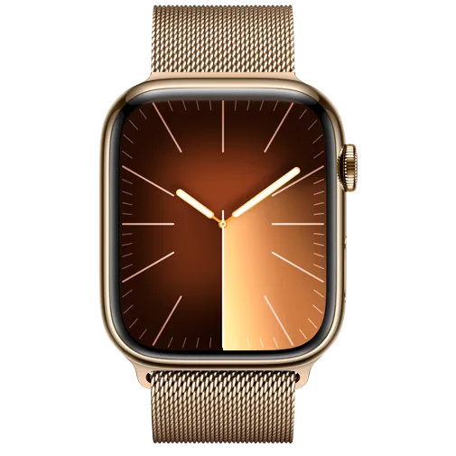
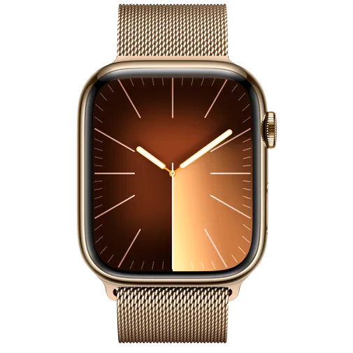

SmartWatch
Apple Watch Series 9

 

Apple Watch Series 9 represents the peak of Apple's mature wearable platform. Performance increases and a new Double Tap gesture were introduced thanks to the S9 SiP. This model is available in two materials....aluminum and stainless steel. The aluminum cases are available in Pink, Midnight, Starlight, Silver, and (PRODUCT)RED. The Stainless steel cases are available in Gold, Silver, and Graphite. Both are available in a 41mm or 45mm size. Like its predecessors, the Apple Watch Series 9 features a Digital Crown and a Side button. The Digital Crown is primarily used to navigate the interface. Pressing the Digital Crown allows users to access the home screen, while a double click allows users to access the App Switcher. Pressing and holding will summon Siri for voice commands. The Side Button can be pressed to show or hide the control center. Pressing and holding it will allow the wearer to use Emergency SOS or to turn off the Apple Watch. Double-clicking the side button allows users to use Apple Pay. nternally, there are several important upgrades. The S9 System in Package (SiP) has a faster CPU for the first time since the Apple Watch Series 6, which means more advanced features. The improved SiP includes a faster processor, faster GPU, and improved Neural Engine. These add up to new features like Double Tap and on-device Siri. Double Tap Apple introduced a new gesture for controlling the Apple Watch called Double Tap. It is an evolution of the existing accessibility feature that has a bit more accuracy and requires less dramatic motion. Ultra Wideband generation 2 This watch also has the second-generation Ultra Wideband chip. This enables more accurate device finding over longer distances, plus advanced Handoff features for HomePod. The Apple Watch Series 9 sees many returning features from previous models. It has the ability to automatically detect severe car crashes using Crash Detection. When a crash has been detected, the Apple Watch will connect users with emergency services, providing dispatchers with their location and notifying their emergency contacts.